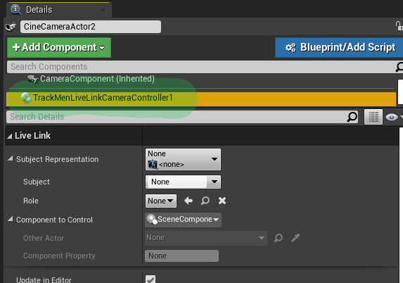

Receive camera tracking data including lens data from TrackMen tracking systems via LiveLink.
Camera controller: apply tracking data to camera objects in the scene.
Composure: apply tracking data to Composure CG layers (max. 1 camera per engine instance).
Debug output: display incoming tracking data in camera view for debug purposes.
Install
Install the plugin from the Epic marketplace like any other plugin.
Enabling the Plugin
Open Edit -> Plugins.
Search for the Live Link plugin in the "Built-In" section, select it and make sure the "enabled"-checkbox is checked.
Search for the TrackMen plugin in the "Installed" section, select it and make sure the "enabled"-checkbox is checked.
A restart of the Unreal Engine is required after changing the enabled-status of plugins.
Adding Live Link Sources
Open the Live Link Window.
Press the "+Source" button.
Select the TrackMen Camera Source,
Enter the UDP port that is used to receive tracking data,
Press the "Add New Camera Source" button.
A new source and a corresponding subject were added.
Controlling a CineCamera using Live Link Data
Select a CineCameraActor.
Press the "Add Component" button in the details panel.
Search for "Track Men".
Select "Track Men Live Link Camera Controller Component".

Select the newly added component.
Click on the "Subject Representation" combo box.
Select the camera subject that was created together with the source.
The CineCameraActor is now updated according to the incoming tracking data.
A lens model post processing material is added to the post processing stack of the Camera component if it does not exist yet.
Apply Tracking Data to Composure CG layers
⚠ WARNING: Supports only one camera per Unreal instance.
In the SceneCaptureComponent2D of your CG layer, add the TrackMenParamCollectionLensDistortion_Inst material instance under RenderingFeatures -> Post Process Materials -> Array.
Debug Output
Add the TrackMenShowLiveLinkParamsDebug component to your CineCameraActor.
Make sure the "show" flag is activated.
Incoming tracking data should be displayed when rendering the scene through the CineCameraActor.